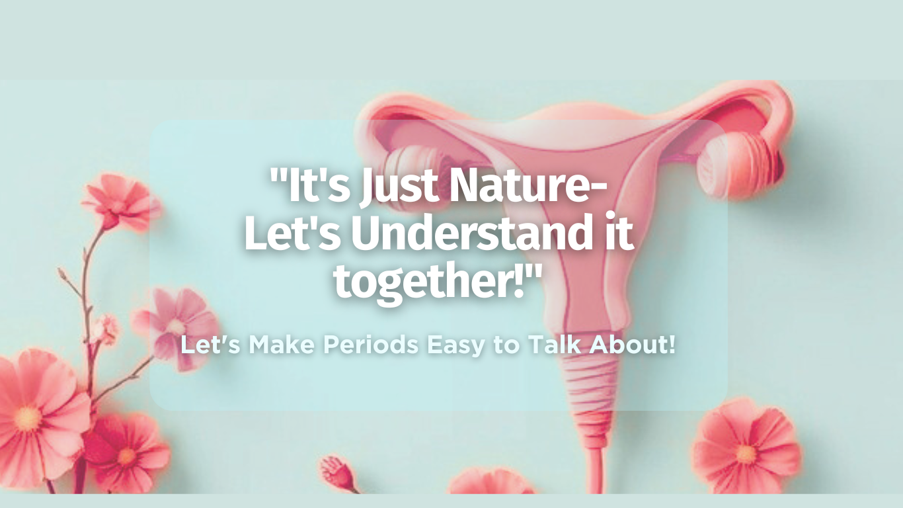
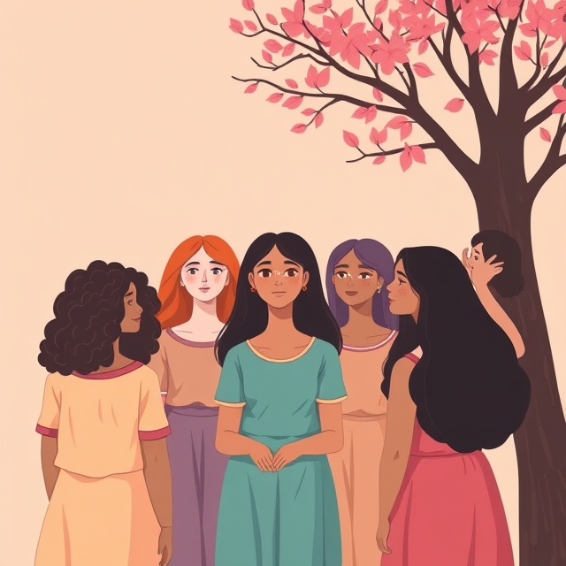
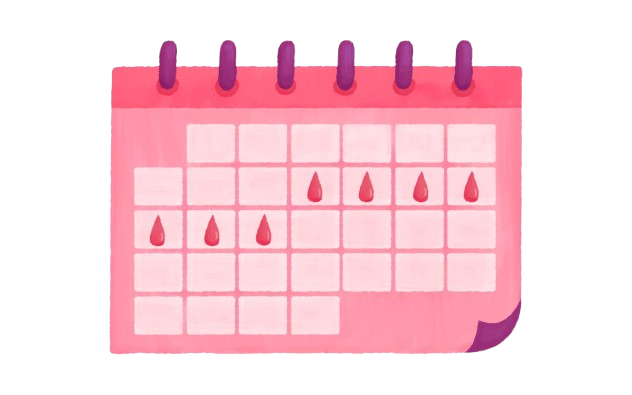

Problem
Many health websites start with too much text or a medical tone.
Health Education · HXI / UX
LunaCare was designed as a menstrual health experience that combines approachable education, supportive tone, product guidance, a quick-access chatbot, and cycle-oriented tools in one softer interface. The UX challenge was to make sensitive health content feel welcoming rather than clinical.

Overview
Many health websites start with too much text or a medical tone.
Use a softer tone, clear paths, and friendly visuals.
Help users learn without fear or overload.
Process
The landing experience centers reassurance and normalization before presenting information depth or tools.
The product combines educational content, self-care suggestions, chatbot assistance, product guidance, and cycle tracking links.
Feature cards and visual categories help users jump to the right learning path instead of scanning long menus.
Quick-reply chatbot prompts give users a low-friction way to ask about cycles, cramps, hygiene products, and nutrition.
Experience Architecture
Primary learning pathways: education, chatbot, products, self-care, community.
Training prompts in the chatbot dataset, giving the assistant strong topical coverage.
Testing prompts used to validate the assistant’s response breadth and tone.
Rows in the project’s knowledge CSV, suggesting a broad menstrual-health content base.
Reconstructed Wireframes
Wireframe 01
Wireframe 02
Wireframe 03
UI Screens
Landing
The home screen uses a supportive headline, soft palette, and stigma-reduction messaging before introducing tools.

Awareness Layer
Illustrated content helps the product feel more human-centered and less intimidating for first-time users.
Chatbot Entry
The chatbot is positioned as a friendly assistant with quick replies, supporting users who may be unsure how to phrase questions.

Cycle Tracking
Tool-driven affordances create practical value, moving LunaCare from awareness site to everyday support system.
Synthesized User Feedback
“It feels like the site is talking to me, not lecturing me.”
Teen learner · synthesized quote
The tone and card-led navigation reduce the feeling of entering a formal medical portal.
“The chatbot gives me a place to start when I don’t know the right words.”
First-time user · synthesized quote
Quick replies lower the barrier to asking health questions, especially for private or sensitive topics.
“The self-care and products sections make the education feel actionable.”
Young adult user · synthesized quote
LunaCare balances explanation with next-step utility, which helps users move from reading to doing.
Design Insight
Why it matters
Health UX works differently when the user is unsure, embarrassed, or overwhelmed.
LunaCare succeeds by slowing the first steps down, making the product feel welcoming before asking users to navigate a lot of information.
HXI Takeaway
The interface acts like a reassuring companion rather than a content repository.
That shift is what makes the system HXI-relevant: the experience considers emotion, confidence, and mental readiness as interaction variables.
Usability Synthesis